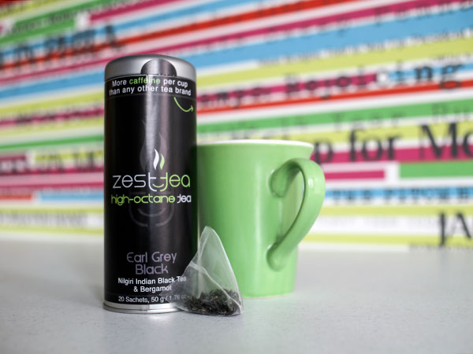

Our fellows are the lifeblood of Venture for America. They are innovators, risk-takers and builders. VFA fellows create tangible value at their start-ups and within their communities every day. Bold. Energetic. Creative. Courageous. Impactful. Experience what it means to be a Venture for America fellow.
1. Network.
The Fellow class consists of exceptional people who will be lifelong partners, advisors, and colleagues. Fellows are connected to leading entrepreneurs and investors in their regions. A great network is one of the main reasons people go to business school. Through VFA, yours is ready-made and much deeper.
2. Work experience.
Fellows gain invaluable hands-on experience of building a business from the ground up.
3. Training and Mentorship.
VFA’s educational component gives Fellows the best of business school without the school debt. Training Camp teaches hard skills through a mix of real-life challenges, inspiring guest speakers, and valuable advice.
What does VFA look for in a Fellow?
Self-starters, builders, creators, and people who have a history of excelling in a wide range of disciplines. All majors are considered, though computer science and engineering majors do have an advantage. Graduate school students are also welcome.
Fellows in Action
Banza
Earlier this year, 2012 Fellow Brian Rudolph competed in the VFA Innovation Fund to raise money for his startup idea: a nutritional pasta alternative made of chickpeas, the delectable “Banza”. Brian believes Banza is the next generation of pasta, similar to how Greek yogurt is the next generation of yogurt. In fact, his dream is to make Banza the Chobani of Detroit.
After crowd funding over $27,000 through the VFA Innovation Fund, he was able to move production out of his kitchen, and start working on his brand, retail relationships, and promotion. Since January, Brian has raised even more money and jumped headlong into turning his culinary creation into reality.
Zest Tea

Fellow James Fayal found himself having those days… well… every day when he first started working full-time. But unlike the coffee-addicts out there, he wanted an alternative way to stay alert without the side effects (and thought some nutritional value would be nice, too). So what’s a Fellow to do?
After he and another Fellow, Rickey Ishida, started looking for healthier ways to get the jolt they needed, the VFA pair realized the options were pretty limited. So in true Fellow fashion, they started blending their own teas, and eventually were getting requests from friends who wanted to get their hands on some super-tea of their own.
And so, Zest Tea was born– a caffeine-packed line of teas that comes in flavors like Apple Cinnamon Black and Pomegranate Mojito Green (mmmm…).
Life in VFA Cities
Baltimore
Detroit
Philadelphia
|
Cincinnati
Las Vegas
Providence
|
Cleveland
New Orleans
Expansion!ColumbusMiamiSan AntonioSt. Louis |